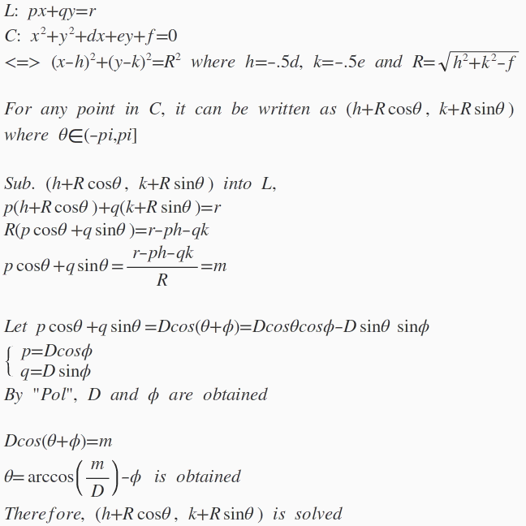

圓形與直線的交點(II)
更新日期: 2012年3月13日
程式由網友 roviury 提供。
程式一 (96 bytes，使用記憶A,B,C,X,Y及M)
?→X: ?→Y: ?→M: ?→A: - . 5A→A: ?→B:
- . 5B→B: AX + BYM- : ?→C: √(A2 + B2
- C→C:
cos-1( M ÷ Pol(
XC , YC→X: A + Ccos(Y - X◢
B + Csin(Y - X◢ A + Rec( C , X+Y◢ B + Y
例題: 求直線3x – y = 5 與圓 x2 + y2 – 8x – 4y + 15 = 0 的交點。
按 Prog 1 再按 3 EXE - 1 EXE 5 EXE - 8 EXE -4 EXE 15 EXE (顯示2)
EXE (顯示1，即其中一交點為(2,1)) EXE (顯示3) EXE (顯示4，即另一交點為(3,4))
註: 程執行完成後，按 RCL A, RCL B及RCL C分別顯示圓心及半徑。
附錄: 程式計算數學原理 (由網友 roviury 提供)

返回 CASIO fx-50FH 及fx-50F PLUS 程式集